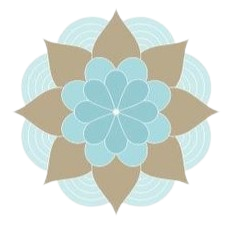

What We Do
We combine ancient Ayurvedic Wisdom with cutting-edge Technology to provide personalized wellness guidance.Our chatbot assesses your prakriti,or constitution, and offers tailored diet and lifestyle recommendations to help you achieve balance and harmony in your life.
 vata
vata
Vata combines air and space, also called ether.It has links to change, mobility, and movement.According to Ayurvedic medicine, it relates to the nervous system and controls breathing, thinking, and circulation.
People with a Vata constitution are typically energetic,creative and flexible, but they may have insufficient or moderate weight, dry skin, and fine hair.
 Pitta
Pitta
Pitta's elemental makeup consists of Fire and water.It governs digestion, body, temperature, and metabolism.Those with a pitta constitution are often focused and driven, with a strong build.
Pitta-dominant people may have oily skin, a warm body temperature, and a sharp intellect.
 Kapha
Kapha is based on Earth and Water. It can be described as steady, stable, heavy, and grounded.This dosha governs structure, stability, and lubrication within the body.
People with a Kapha constitution often have a calm temperature, well-built bodies, and smooth, radiant skin.